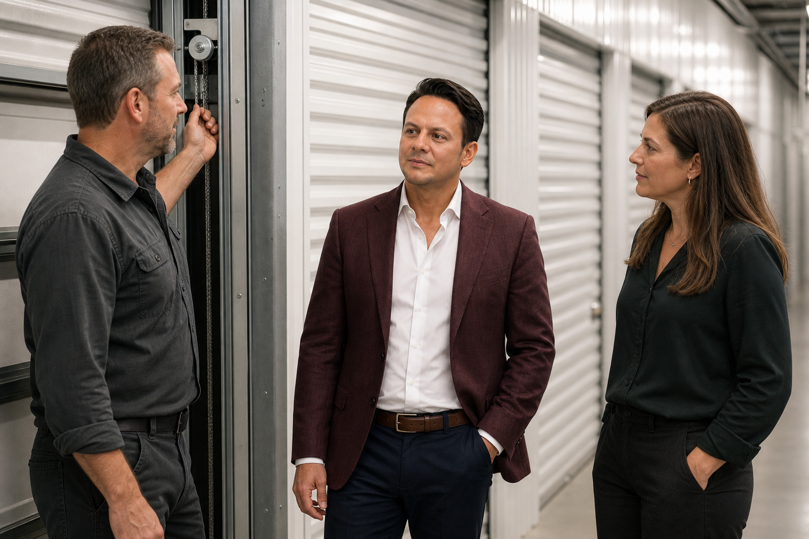

Portfolio incident truth ·
One Incident, Five Tickets: Stop Counting Workflow Records as Separate Facility Failures
A portfolio incident-family record keeps duplicate reports, distinct symptoms, suspected causes and verified corrections connected without pretending they are the same thing.

Editorial disclosure: Research synthesis, drafting and quality assurance were AI-assisted under Jared Mastroianni's byline. Invented scenarios and datasets are fictional, not verified operating results.
Consider a fictional multi-location self-storage portfolio. At 7:12 a.m., a facility manager reports that the entrance gate will not open. At 7:18, the call center creates a customer-access ticket. At 7:23, the access-control platform issues an offline-device alert. At 7:31, a regional manager opens a vendor work order. At 7:44, another employee reports that the office payment terminal also restarted.
The portfolio now has five records. It may have one incident, several related symptoms, or more than one unrelated problem.
Counting each record as a separate failure overstates frequency. Merging them immediately under one assumed cause hides uncertainty. Closing the vendor work order while customer access remains impaired understates impact. The operating system needs a level above the individual ticket: an incident family that connects related records while preserving what each one actually proves.
This is not a proposal to add bureaucracy to every maintenance request. It is a control for consequential events that generate multiple reports, cross systems, affect more than one operating function, or require a portfolio-level conclusion.
A ticket is a workflow container, not an event count
Different systems create records for different reasons. A customer-service platform tracks a conversation. A work-order system dispatches labor. An access platform records device state. An employee log captures a direct observation. An invoice supports payment review.
Those records can point to the same operating episode without becoming interchangeable.
The customer-access ticket may establish that someone could not enter at 7:16. It does not prove the gate motor failed. The device alert may establish that a controller stopped communicating at 7:22. It does not prove when customer impact began. The vendor work order may establish that a technician was asked to investigate. It does not prove that the facility accepted a repair or that access was restored.
Portfolio reporting goes wrong when a workflow action is promoted into an operating fact. “Five tickets” becomes “five outages.” “Work order complete” becomes “incident resolved.” “Alert cleared” becomes “customer access restored.”
The incident-family record prevents those substitutions. It gives the portfolio one place to state what is known about the episode while leaving every source record intact.
Start with a candidate family, not a declared cause
The first grouping should be provisional. Use a candidate family when records share enough context to justify review but not enough evidence to declare one cause.
Five questions provide a practical screen:
- Facility: Do the records concern the same physical site, gate lane, building system or service area?
- Time: Did the observations occur within a plausible operating window, with timestamps interpreted in the facility's local time and source timezone?
- Condition: Do they describe the same observable condition, a downstream effect, or merely events that happened near one another?
- Dependency: Is there an established relationship among the affected components, or is the relationship only suspected?
- Consequence: Did the records affect the same customer, employee or operating decision?
Similarity is enough to open a review. It is not enough to assign a root cause.
In the fictional example, the gate failure, device alert and customer-access report belong in a candidate family because they concern the same facility, overlapping time and related access consequences. The payment-terminal restart may be linked as a separate symptom because it could support a broader power event. It should not be merged as proof of that cause until evidence supports the connection.
Preserve four identities
A usable incident family keeps four identities distinct.
The signal is the raw observation: a person reports a gate that will not open, a device emits an alert, or a camera loses a feed.
The record is the system entry created to manage that signal: a ticket, work order, call log, alert or vendor dispatch.
The incident is the bounded operating episode being investigated: for example, customer entry through the east gate was unavailable from the first verified affected time until the first verified restored time.
The cause is the condition supported by investigation: perhaps a failed component, a configuration error, a loss of power, or still unknown.
These identities should never collapse into one field. One signal can create multiple records. One incident can produce multiple signals. Multiple incidents can occur near each other. A cause can remain unknown even after service is restored.
That last point matters. Operational recovery does not require a fabricated explanation. The portfolio can release customer access after verification while keeping the cause field open for qualified review.
Link, merge or split deliberately
An incident-family review has three legitimate outcomes.
Link records when they may be related but must retain separate incident status. A gate outage and a payment-terminal restart can be linked while the shared-cause question remains open.
Merge records into one incident when the operating episode, affected scope and evidence support a single bounded event. Duplicate customer calls about the same gate condition may become members of one incident family without being counted as separate outages.
Split a record from the family when later evidence shows that it concerns another facility, another time window, another asset or an independent condition. Splitting is not an error. It is a correction to the model.
Every decision needs a short rationale, the person who made it, the timestamp and the evidence consulted. Do not silently rewrite history by moving tickets between families without recording why.
The family record should also retain the original identifiers and durable links. Portfolio staff must be able to return to the source rather than relying on copied summaries.
Keep symptom, impact and cause in separate fields
A mature incident record avoids one overloaded description box. At minimum, separate:
- Observed symptom: what a person or system directly reported.
- Affected scope: the facility, asset, lane, service and audience involved.
- Operational impact: what customers or employees could not do, if verified.
- Suspected cause: a working hypothesis, labeled as such.
- Verified cause: the conclusion supported by qualified investigation, or unknown.
- Containment: the temporary control used to reduce exposure.
- Correction: the action taken to restore the affected function.
- Release evidence: the observation that supports reopening or normal use.
This structure protects the portfolio from a common shortcut: converting the technician's first theory into the official cause. It also allows reporting to distinguish “service restored, cause unknown” from “cause verified and correction completed.”
Close children without closing the family
Member records may finish at different times. A customer-service ticket can close after the customer receives an update. A vendor work order can close after on-site work is performed and accepted. A device alert can clear when communication resumes. None of those actions automatically closes the incident family.
The family closes only when its own release conditions are met:
- The affected scope and audience are defined.
- The last verified impact time and first verified restored time are recorded, or the limitation is explicit.
- Temporary controls are removed or transferred to a named owner.
- Required operating checks pass at the facility.
- Open cause or follow-up questions have owners and dates.
- The person authorized to release the family records the decision.
If customer access is restored but a power-quality review remains open, the family can move to operationally restored / follow-up open. That is more truthful than leaving the whole incident “open” indefinitely or calling every question “resolved.”
Measure the portfolio from incident families
Once families exist, portfolio metrics become more defensible.
Count operating incidents from released family records, not from every member ticket. Count customer contacts separately. Count vendor dispatches separately. Count device alerts separately. Each number answers a different question.
Duration also needs a named clock. A family can carry:
- first verified affected time;
- first portfolio awareness time;
- containment time;
- first verified restored time; and
- family close time.
These intervals should not be substituted for one another. Awareness-to-restoration is not the same as customer-impact duration when the first affected time is uncertain. Family close time may include investigation after service is already back.
If the beginning or end is unknown, preserve the unknown state. Do not fill the gap with the ticket-created time or the moment someone clicked “complete.”
A fictional portfolio example
The following example is fictional and contains no customer, deployment or measured result.
At 8:05 a.m., a manager at Harbor Point Storage reports that the vehicle gate opens only after a second credential attempt. Two customer calls arrive by 8:20. At 8:24, the access platform records intermittent controller communication. A vendor ticket opens at 8:31. At 8:46, an employee notes that pedestrian access is working normally.
The regional operator opens family HP-20261002-01 and adds the five source records. The family scope is limited to vehicle entry at Harbor Point; pedestrian access is recorded as an unaffected observation, not ignored. Customer contacts remain two contacts, while the incident count remains one candidate episode.
At 9:12, a technician finds a loose power connection at the gate controller and documents the correction. The manager tests three authorized credential types, observes successful opening and closing, checks the vehicle path, and records release at 9:27. The device alert clears at 9:29. A customer-service employee closes both call records after updates are sent.
The family closes as one verified vehicle-entry incident. It does not claim that the entire facility lost access. It does not count the two calls, one alert and one work order as four additional failures. It retains each source record and the release evidence.
Use the incident-family card at the next portfolio review
The companion card is designed for events with multiple records or cross-functional consequences. It is unnecessary for a routine, isolated task whose scope and completion are already clear.
At the next portfolio review:
- Select one recent event that generated more than one record.
- List every source identifier without rewriting the source.
- Define the candidate facility, asset, time window and affected audience.
- Classify each member as a signal, workflow record, symptom, impact observation, action or release check.
- Decide whether to link, merge or split, and record the rationale.
- Review the family release conditions independently of member-ticket status.
- Report incident count, contacts, alerts, dispatches and durations as separate measures.
The control should be owned by the operating function responsible for cross-system incident truth, with participation from the facility manager and the technical or vendor owner involved. Revalidation occurs whenever new evidence changes scope, cause, impact, correction or release.
National Institute of Standards and Technology guidance for cybersecurity incident response emphasizes recording investigative actions, preserving record integrity and provenance, collecting incident data and validating incident magnitude.[1] The Cybersecurity and Infrastructure Security Agency describes standardized processes that improve coordination, track actions and catalog incidents.[2] NIST's own safety program similarly connects incident reporting, cause investigation and corrective action intended to prevent recurrence.[3]
Those sources govern different contexts. They do not establish a self-storage maintenance standard or validate this incident-family design. They do support a portable operating principle: consequential events are easier to manage when actions, evidence, scope and corrections remain traceable.
One operating incident can create five tickets. The portfolio should preserve all five records without reporting five failures. That distinction is the difference between a busy queue and a trustworthy operating history.
Sources
- National Institute of Standards and Technology, Incident Response Recommendations and Considerations for Cybersecurity Risk Management: A CSF 2.0 Community Profile, NIST SP 800-61 Revision 3, April 2025, accessed October 2, 2026: https://doi.org/10.6028/NIST.SP.800-61r3
- Cybersecurity and Infrastructure Security Agency, “Executive Order on Improving the Nation's Cybersecurity,” section on standardized incident and vulnerability response playbooks, accessed October 2, 2026: https://www.cisa.gov/topics/cybersecurity-best-practices/executive-order-improving-nations-cybersecurity
- National Institute of Standards and Technology, “Incident Reporting and Investigation,” updated February 2, 2023, accessed October 2, 2026: https://www.nist.gov/oshe/safety-programs/incident-reporting-and-investigation
Author
Jared Mastroianni is Chief Operating Officer of modSTORAGE and CEO and Founder of Facily.ai. His work focuses on facility operations, multi-location systems, data governance and responsible artificial intelligence.
Incident-family tools and governed package
The card and example are proposed operating tools. The example is fictional; no deployment or measured result is claimed.